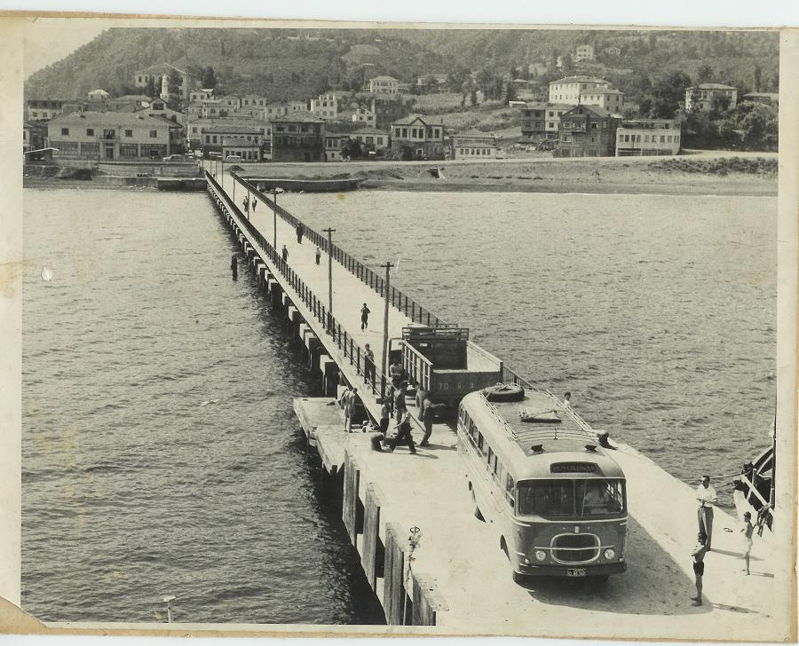

VAKFIKEBİR
Genel Bilgi
Vakfıkebir, Trabzonun 40 km batısında olup, ilçe toprakları Doğuda Çarşıbaşı, Batıda Beşikdüzü, Güneyde Tonya ilçeleri ve Kuzeyde Karadeniz ile çevrilidir. Vakfıkebir nüfusu 2020 yılına göre 27.332. Bu nüfus, 13.409 erkek ve 13.923 kadından oluşmaktadır. İlçe merkezi; doğuda Işıklı (Yeros), batıda Zeytin (Yobol) burunları arasında meydana gelmiş genişçe bir merkezin en uç noktasında kuruludur. Bu nedenle ilçe adı, Coğrafi kitaplarında Büyükliman olarak da gösterilir. Işıklı fenerinden itibaren kıyı, Güney Batıya ve daha sonra Kuzey Batıya yönelerek Büyükliman adıyla anılan geniş koyu meydana geldikten sonra Zeytinburnuna ulaşır. Büyükliman koyu, karayele kısmen kapalı olup, denizciler için iyi sayılan bir demir atma yeridir. Vakfıkebir, Karadeniz Bölgesi Doğu bölümünün iklim şartlarının etkisi altında olup burada iklim, ılıman iklimin denizsel karakterini taşır. Yazlar orta sıcaklıkta, kışlar ılık ve mevsimler yağışlı geçer. Yağmurun en yoğun olduğu mevsim sonbahar, ilkbahar ve kıştır. İlçenin başlıca gelir kaynağı tarım, hayvancılık, fındık ve balıkçılıktır. İlçede bir organize sanayi bölgesi ile çeşitli mandıralar bulunmaktadır. Şehir, taş fırınlarında pişen Vakfıkebir Ekmeği ve tereyağı ile ünlüdür.

Tarihi
Vakfıkebir'in kuruluş tarihi kesin olarak bilinmemekle beraber çok
eski bir yerleşim yeridir. Tarihi boyunca Hitit, Pers, Roma, Bizans
ve Trabzon Rum İmparatorluğu'nun hakimiyetinde kalan Vakfıkebir 1461
yılında Fatih Sultan Mehmet'in Trabzon Rum İmparatorluğu'nu yıkması
ile Osmanlı İmparatorluğu'nun hakimiyetine girmiştir.
Trabzon'un fethinden sonra Osmanlı İmparatorluğu'nun değişik
bölgelerinden gelen Türk boyları Vakfıkebir'e yerleşmişlerdir. Gelen
boyların yeni yerleşim yerlerini benimsemeleri ve kültürlerini
bölgeye taşımaları sonucunda Vakfıkebir çok kısa sürede bir Türk
yurdu olmuştur. Osmanlı İmparatorluğu'nun sınırlarına katılmasından
sonra çeşitli idari kademelere ve isimlere maruz kalan Vakfıkebir
1864 tarihli Osmanlı Vilayet Kanunu çerçevesinde 1874 yılında
Trabzon vilayetine bağlı bir ilçe olmuştur.
İlçemiz 20 Temmuz 1916 tarihinde Rus Çarlığının işgaline uğramış ve
14 Şubat 1918 tarihinde kahraman ordumuz tarafından düşman
işgalinden kurtarılmıştır. İşgal altında geçen dönem halk arasında
"Muhaceret" olarak anılmakta ve her yıl 14 Şubat tarihinde büyük
törenlerle kutlanmaktadır.
İlçe halkı ülkenin kurtulması ve bağımsız bir Türk devleti kurulması
çalışmalarında hep Atatürk'ün yanında yer almıştır. Bu çerçevede
ilçe halkı aldıkları bir kararla Kellecioğlu Abdullah Hasip (Ataman)
Beyi Erzurum Kongresi'ne Büyükliman Delegesi olarak göndermiştir.
Abdullah Hasip Bey, Erzurum Kongresi'nin iki yazmanından birisi
olarak görev yapmıştır.

Vakfıkebir Cumhuriyetin kuruluşu ile beraber ilçe olma özelliğini ve
sınırlarını korumuştur. Bu tarihte ilçenin merkez ile birlikte beş
nahiyesi ve 129 köyü vardır. Bu nahiyelerden 10.03.1954 tarih ve
6324 sayılı kanunla Tonya, 19.06.1987 tarih ve 3392 sayılı kanunla
Beşikdüzü ve Şalpazarı, 09.05.1990 tarih ve 3644 sayılı kanunla
Çarşıbaşı ilçe olmuş ve ilçemizden ayrılmışlardır. 44 mahallesi
mevcuttur.
Vakfıkebir'in ilk adı Fol'dur. Bu ismi ilçenin 45 km. güneyinden
doğan ve ilçe merkezinde denize dökülen aynı isimli dereden
almıştır.
Vakfıkebir'in ikinci adı Büyükliman'dır. Vakfıkebir'in doğusunda yer
alan Fener (Yeros) Burnu ile batısındaki Zeytin (Yobol) Burnu
arasında kalan kısım karayele kısmen kapalı doğal bir limandır.
Vakfıkebir bu doğal limanın merkezinde yer almaktadır. Bu nedenle
Vakfıkebir uzun yıllar Büyükliman adıyla anılmıştır. Vakfıkebir
bugünkü adını, Yavuz Sultan Selim annesi Gülbahar Hatun'dan
almıştır.
O tarihte Trabzon Valisi olan oğlu Şehzade Selim'i görmek için
İstanbul'dan Trabzon'a deniz yoluyla seyahat eden Gülbahar Hatun
büyük bir fırtınaya yakalanmış, kurtulması halinde karaya ayak
basacağı toprakları Halka vakfedeceğini adamıştır. O zamanki adıyla
Büyükliman olan yerleşim merkezinde toprağa ayak basan Gülbahar
Hatun bu toprakları vakfeder. Vakfedenin büyük (padişah eşi)
olmasından dolayı bu tarihten sonra yörenin adı Vakfıkebir (Büyük
Vakıf) olmuştur. Vakfıkebir adının beş yüz yıllık geçmişi olmasına
rağmen halk arasında Fol ve Büyükliman adları zaman zaman
kullanılmaktadır.